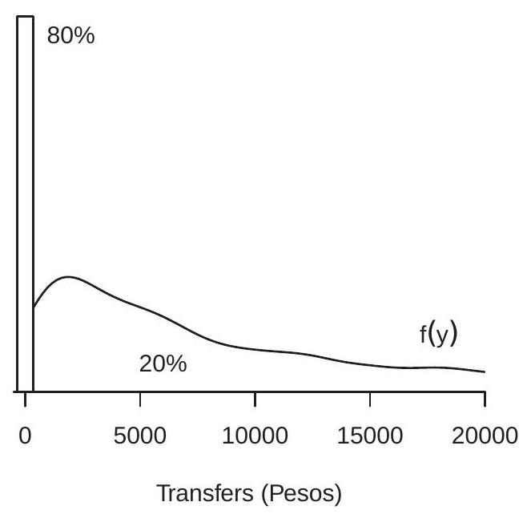
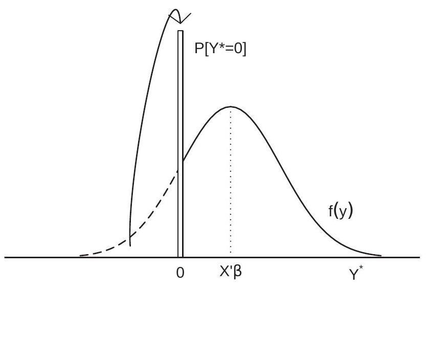
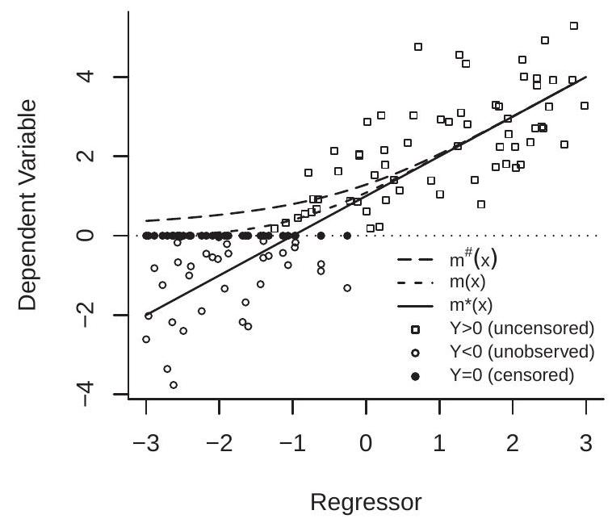
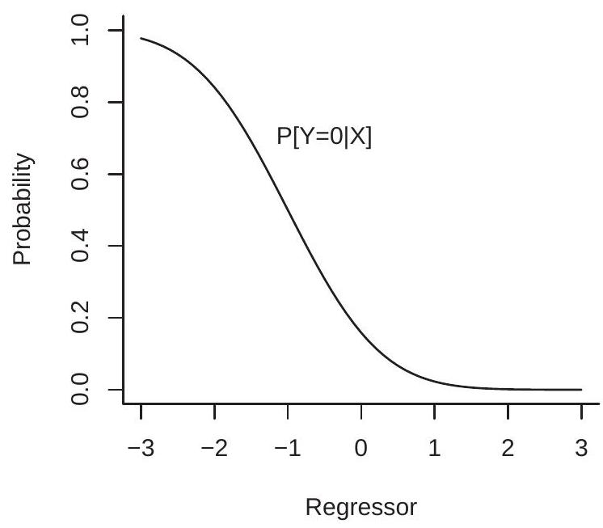
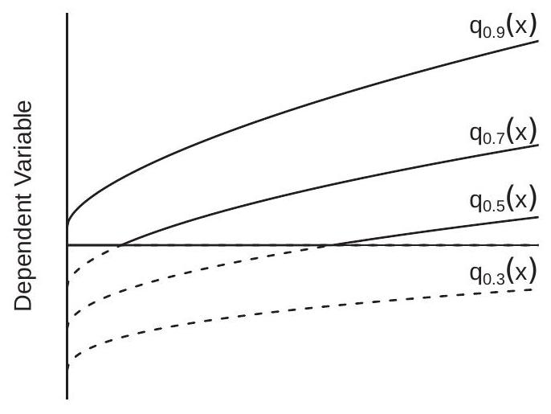
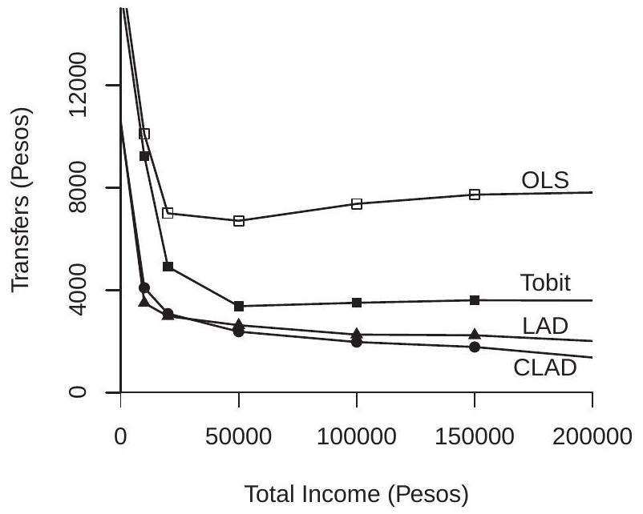

25 Censoring and Selection
25.1 Introduction
Censored regression occurs when the dependent variable is constrained, resulting in a pile-up of observations on a boundary. Selection occurs when sampling is endogenous. Under either censoring or selection, conventional (e.g. least squares) estimators are biased for the population parameters of the uncensored/unselected distributions. Methods have been developed to circumvent this bias, including the Tobit, CLAD, and sample selection estimators.
For more detail see Maddala (1983), Amemiya (1985), Gourieroux (2000), Cameron and Trivedi (2005), and Wooldridge (2010).
25.2 Censoring
It is common in economic applications for a dependent variable to have a mixed discrete/continuous distribution, where the discrete component is on the boundary of support. Most commonly this boundary occurs at 0. For example, Figure 27.1(a) displays the density of tabroad (transfers from abroad) from the data file \(\mathrm{CH} \mathrm{J} 2004\). This variable is the amount \({ }^{1}\) of remittances received by a Philippino household from a foreign source. For \(80 %\) of households this variable equals 0 . The associated mass point is displayed by the bar at zero. For \(20 %\) of households tabroad is positive and continuously distributed with a thick right tail. The associated density is displayed by the line graph.
Given such observations it is unclear how to proceed with a regression analysis. Should we use the full sample including the 0’s? Should we use only the sub-sample excluding the 0’s? Or should we do something else?
To answer these questions it is useful to have a statistical model. A classical framework is censored regression, which posits that the observed variable is a censored version of a latent continuouslydistributed variable. Without loss of generality we focus on the case of censoring from below at zero.
The censored regression model was proposed by Tobin (1958) to explain household consumption of durable goods. Tobin observed that in survey data, durable good consumption is zero for a positive fraction of households. He proposed treating the observations as censored realizations from a continuous
\({ }^{1}\) In thousands of Philippino pesos.

- Transfers from Abroad

- Censoring Process
Figure 27.1: Censored Densities
distribution. His model is
\[ \begin{aligned} &Y^{*}=X^{\prime} \beta+e \\ &e \mid X \sim \mathrm{N}\left(0, \sigma^{2}\right) \\ &Y=\max \left(Y^{*}, 0\right) . \end{aligned} \]
This model is known as Tobit regression or censored regression. It is also known as the Type 1 Tobit model. The variable \(Y^{*}\) is latent (unobserved). The observed variable \(Y\) is censored from below at zero. This means that positive values are uncensored and negative values are transformed to 0 . This censoring model replicates the observed phenomenon of a pile-up of observations at 0 .
The Tobit model can be justified by a latent choice framework where an individual’s optimal (unconstrained) continuously distributed choice is \(Y^{*}\). Feasible choices, however, are constrained to satisfy \(Y \geq 0\). (For example, negative purchases are not allowed.) Consequently the realized value \(Y\) is a censored version of \(Y^{*}\). To justify this interpretation of the model we need to envisage a context where desired choices include negative values. This may be a strained interpretation for consumption purchases, but may be reasonable when negative values make economic sense.
The censoring process is depicted in Figure 27.1(b). The latent variable \(Y^{*}\) has a normal density centered at \(X^{\prime} \beta\). The portion for \(Y^{*}>0\) is maintained while the portion for \(Y^{*}<0\) is transformed to a point mass at zero. The location of the density and the degree of censoring are controlled by the conditional mean \(X^{\prime} \beta\). As \(X^{\prime} \beta\) moves to the right the amount of censoring is decreased. As \(X^{\prime} \beta\) moves to the left the amount of censoring is increased.
A common “remedy” to the censoring problem is deletion of the censored observations. This creates a truncated distribution which is defined by the following transformation
\[ Y^{\#}=\left\{\begin{array}{cc} Y & \text { if } Y>0 \\ \text { missing } & \text { if } Y=0 . \end{array}\right. \]
In Figure 27.1(a) and Figure 27.1(b) the truncated distribution is the continuous portion above 0 with the mass point at 0 omitted.
The censoring and truncation processes are depicted in Figure 27.2(a) which plots 100 random \(^{2}\) draws \(\left(Y^{*}, X\right)\). The uncensored variables are marked by the open circles and squares. The open squares are the realizations for which \(Y^{*}>0\) and the open circles are the realizations for which \(Y^{*}<0\). The censored distribution replaces the negative values of \(Y^{*}\) with 0 , and thus replaces the open with the filled circles. The censored distribution thus consists of the open squares and filled circles. The truncated distribution is obtained by deleting the censored observations so consists of just the open squares.

- Censored Regression Functions

- Censoring Probability
Figure 27.2: Properties of Censored Distributions
To summarize: we distinguish between three distributions and variables: uncensored \(\left(Y^{*}\right)\), censored \((Y)\), and truncated \(\left(Y^{\#}\right)\).
The censored regression model (27.1) makes several strong assumptions: (1) linearity of the conditional mean; (2) independence of the error; (3) normal distribution. The linearity assumption is not critical as we can interpret \(X^{\prime} \beta\) as a series expansion or similar flexible approximation. The independence assumption, however, is quite important as its violation (e.g. heteroskedasticity) changes the properties of the censoring process. The normality assumption is also quite important, yet difficult to justify from first principles.
25.3 Censored Regression Functions
We can calculate some properties of the conditional distribution of the censored random variable. The conditional probability of censoring is
\[ \mathbb{P}\left[Y^{*}<0 \mid X\right]=\mathbb{P}\left[e<-X^{\prime} \beta \mid X\right]=\Phi\left(-\frac{X^{\prime} \beta}{\sigma}\right) . \]
\({ }^{2} X \sim U[-3,3]\) and \(Y^{*} \mid X \sim \mathrm{N}(1+X, 1)\) We illustrate in Figure 27.2(b). This plots the censoring probability as a function of \(X\) for the example from Figure \(27.2(\mathrm{a})\). The censoring probability is \(98 %\) for \(X=-3,50 %\) for \(X=-1\) and \(2 %\) for \(X=1\).
The conditional mean of the uncensored, censored, and truncated distributions are
\[ \begin{aligned} m^{*}(X) &=\mathbb{E}\left[Y^{*} \mid X\right]=X^{\prime} \beta, \\ m(X) &=\mathbb{E}[Y \mid X]=X^{\prime} \beta \Phi\left(\frac{X^{\prime} \beta}{\sigma}\right)+\sigma \phi\left(\frac{X^{\prime} \beta}{\sigma}\right) \\ m^{\#}(X) &=\mathbb{E}\left[Y^{\#} \mid X\right]=X^{\prime} \beta+\sigma \lambda\left(\frac{X^{\prime} \beta}{\sigma}\right) . \end{aligned} \]
The function \(\lambda(x)=\phi(x) / \Phi(x)\) in (27.3) is called the inverse Mills ratio. To obtain (27.2) and (27.3) see Theorems 5.8.4 and 5.8.6 of Probability and Statistics for Economists and Exercise 27.1.
Since \(Y^{*} \leq Y \leq Y^{\#}\) it follows that
\[ m^{*}(x) \leq m(x) \leq m^{\#}(x) \]
with strict inequality if the censoring probability is positive. This shows that the conditional means of the truncated and censored distributions are biased for the uncensored conditional mean.
We illustrate in Figure 27.2(a). The uncensored mean \(m^{*}(x)\) is marked by the straight line, the censored mean \(m(x)\) is marked with the dashed line, and the truncated mean \(m^{\#}(x)\) is marked with the long dashes. The functions are strictly ranked with the truncated mean exhibiting the highest bias.
25.4 The Bias of Least Squares Estimation
If the observations \((Y, X)\) are generated by the censored model (27.1) then least squares estimation using either the full sample including the censored observations or the truncated sample excluding the censored observations will be biased. Indeed, an estimator which is consistent for the CEF (such as a series estimator) will estimate the censored mean \(m(x)\) or truncated mean \(m^{\#}(x)\) in the censored and truncated samples, respectively, not the latent CEF \(m^{*}(x)\).
It is also interesting to consider the properties of the best linear predictor of \(Y\) on \(X\), which is the estimand of the least squares estimator. In general, this depends on the marginal distribution of the regressors. However, when the regressors are normally distributed it takes a simple form as discovered by Greene (1981). Write the model with an explicit intercept as \(Y^{*}=\alpha+X^{\prime} \beta+e\) and assume \(X \sim \mathrm{N}(0, \Sigma)\). Greene showed that the best linear predictor slope coefficient is
\[ \beta_{\mathrm{BLP}}=\beta(1-\pi) \]
where \(\pi=\mathbb{P}[Y=0]\) is the censoring probability. We derive (27.4) at the end of this section.
Greene’s formula (27.4) shows that the least squares slope coefficients are shrunk towards zero proportionately with the censoring percentage. While Greene’s formula is special to normal regressors it gives a baseline estimate of the bias due to censoring. The censoring proportion \(\pi\) is easily estimated from the sample (e.g. \(\pi=0.80\) in our transfers example) allowing a quick calculation of the expected bias due to censoring. This can be used as a rule of thumb. If the expected bias is sufficiently small (e.g. less than 5%) the resulting expected estimation bias (e.g. 5%) may be acceptable, leading to conventional least squares estimation using the full sample without an explicit treatment of censoring. However, if the censoring proportion \(\pi\) is sufficiently high (e.g. 10%) then estimation methods which correct for censoring bias may be desired.
We close this section by deriving (27.4). The calculation is simplified by a trick suggested by Goldberger (1981). Notice that \(Y^{*} \sim \mathrm{N}\left(\alpha, \sigma_{Y}^{2}\right)\) with \(\sigma_{Y}^{2}=\sigma^{2}+\beta^{\prime} \Sigma \beta\). Using the moments of the truncated normal distribution (Probability and Statistics for Economists, Theorems 5.7.6 and 5.7.8) and setting \(\lambda=\lambda\left(\alpha / \sigma_{Y}\right)\) we can calculate that
\[ \begin{aligned} \mathbb{E}\left[\left(Y^{*}-\alpha\right) Y^{*} \mid Y^{*}>0\right] &=\operatorname{var}\left[Y^{*} \mid Y^{*}>0\right]+\left(\mathbb{E}\left[Y^{*} \mid Y^{*}>0\right]-\alpha\right) \mathbb{E}\left[Y^{*} \mid Y^{*}>0\right] \\ &=\sigma_{Y}^{2}\left(1-\frac{\alpha}{\sigma_{Y}} \lambda-\lambda^{2}\right)+\sigma_{Y} \lambda\left(\alpha+\sigma_{Y} \lambda\right)=\sigma_{Y}^{2} . \end{aligned} \]
The projection of \(X\) on \(Y^{*}\) is \(X=\mathbb{E}\left[X Y^{*}\right] \sigma_{Y}^{-2}\left(Y^{*}-\alpha\right)+u\) where \(u\) is independent of \(Y^{*}\). This implies
\[ \begin{aligned} \mathbb{E}\left[X Y^{*} \mid Y^{*}>0\right] &=\mathbb{E}\left[\left(\mathbb{E}\left[X Y^{*}\right] \sigma_{Y}^{-2}\left(Y^{*}-\alpha\right)+u\right) Y^{*} \mid Y^{*}>0\right] \\ &=\mathbb{E}\left[X Y^{*}\right] \sigma_{Y}^{-2} \mathbb{E}\left[\left(Y^{*}-\alpha\right) Y^{*} \mid Y^{*}>0\right] \\ &=\mathbb{E}\left[X Y^{*}\right] \end{aligned} \]
Hence
\[ \begin{aligned} \beta_{\mathrm{BLP}} &=\mathbb{E}\left[X X^{\prime}\right]^{-1} \mathbb{E}[X Y] \\ &=\mathbb{E}\left[X X^{\prime}\right]^{-1} \mathbb{E}\left[X Y^{*} \mid Y^{*}>0\right](1-\pi) \\ &=\mathbb{E}\left[X X^{\prime}\right]^{-1} \mathbb{E}\left[X Y^{*}\right](1-\pi) \\ &=\beta(1-\pi) \end{aligned} \]
which is (27.4) as claimed.
25.5 Tobit Estimator
Tobin (1958) proposed estimation of the censored regression model (27.1) by maximum likelihood.
The censored variable \(Y\) has a conditional distribution function which is a mixture of continuous and discrete components:
\[ F(y \mid x)=\left\{\begin{array}{cc} 0, & y<0 \\ \Phi\left(\frac{y-x^{\prime} \beta}{\sigma}\right), & y \geq 0 \end{array}\right. \]
The associated density \({ }^{3}\) function is
\[ f(y \mid x)=\Phi\left(-\frac{x^{\prime} \beta}{\sigma}\right)^{\mathbb{1}\{y=0\}}\left[\sigma^{-1} \phi\left(\frac{y-x^{\prime} \beta}{\sigma}\right)\right]^{\mathbb{1}\{y>0\}} . \]
The first component is the probability of censoring and the second component is the normal regression density.
The log-likelihood is the sum of the log density functions evaluated at the observations:
\[ \begin{aligned} \ell_{n}\left(\beta, \sigma^{2}\right) &=\sum_{i=1}^{n} \log f\left(Y_{i} \mid X_{i}\right) \\ &=\sum_{i=1}^{n}\left(\mathbb{1}\left\{Y_{i}=0\right\} \log f\left(Y_{i} \mid X_{i}\right)+\mathbb{1}\left\{Y_{i}>0\right\} \log \left[\sigma^{-1} \phi\left(\frac{Y_{i}-X_{i}^{\prime} \beta}{\sigma}\right)\right]\right) \\ &=\sum_{Y_{i}=0} \log \Phi\left(-\frac{X_{i}^{\prime} \beta}{\sigma}\right)-\frac{1}{2} \sum_{Y_{i}>0}\left(\log \left(2 \pi \sigma^{2}\right)+\frac{1}{\sigma^{2}}\left(Y_{i}-X_{i}^{\prime} \beta\right)^{2}\right) \end{aligned} \]
\({ }^{3}\) Since the distribution function is discontinuous at \(y=0\) the density is technically the derivative with respect to a mixed continuous/discrete measure. The first component is the same as in a probit model, and the second component is the same as for the normal regression model.
The \(\operatorname{MLE}\left(\widehat{\beta}, \widehat{\sigma}^{2}\right)\) are the values which maximize the log-likelihood \(\ell_{n}\left(\beta, \sigma^{2}\right)\). This estimator was nicknamed “Tobit” by Goldberger because of its connection with the probit estimator. Amemiya (1973) established its asymptotic normality.
Computation is improved, as shown by Olsen (1978), if we transform the parameters to \(\gamma=\beta / \sigma\) and \(\nu=1 / \sigma\). Then the reparameterized log-likelihood equals
\[ \ell_{n}(\gamma, v)=\sum_{Y_{i}=0} \log \Phi\left(-X_{i}^{\prime} \gamma\right)+\sum_{Y_{i}>0} \log (v / \sqrt{2 \pi})+\left(-\frac{1}{2}\right) \sum_{Y_{i}>0}\left(Y_{i} v-X_{i}^{\prime} \gamma\right)^{2} . \]
This is the sum of three terms, each of which is globally concave in \((\gamma, v)\) (as we now discuss), so \(\ell_{n}(\gamma, v)\) is globally concave in \((\gamma, v)\) ensuring global convergence of Newton-based optimizers. Indeed, the third term in (27.5) is the negative of a quadratic in \((\gamma, \nu)\), so is concave. The second term in (27.5) is logarithmic in \(v\), which is concave. The first term in (27.5) is a function only of \(\gamma\) and has second derivative
\[ \frac{\partial^{2}}{\partial \gamma \partial \gamma^{\prime}} \sum_{Y_{i}=0} \log \Phi\left(-X_{i}^{\prime} \gamma\right)=\sum_{Y_{i}=0} X_{i} X_{i}^{\prime} \lambda^{\prime}\left(-X_{i}^{\prime} \gamma\right) \]
which is negative definite because the Mills ratio satisfies \(\lambda^{\prime}(u)<0\) (see Theorem 5.7.7 in Probability and Statistics for Economists). Hence the first term in (27.5) is concave.
In Stata, Tobit regression can be estimated with the tobit command. In R there are several options including the tobit command in the AER package.
James Tobin\ James Tobin (1918-2002) of the United States was one of the leading macroe-\ conomists of the mid-twentieth century and winner of the 1981 Nobel Memorial\ Prize in Economic Sciences. His 1958 paper introduced censored regression and\ its MLE, typically called the Tobit estimator. As a fascinating coincidence, the\ name “Tobit” also arises in the 1951 novel The Caine Mutiny, set on a U.S. Navy\ destroyer during World War II. At one point in the novel the author describes\ a crew member named “Tobit” who had “a mind like a sponge” because of his\ strong intellect. It turns out the author (Herman Wouk) and James Tobin served\ on the same Navy destroyer during WWII. Go figure!
25.6 Identification in Tobit Regression
The Tobit model (27.1) makes several strong assumptions. Which are critical? To investigate this question consider the nonparametric censored regression framework
\[ \begin{aligned} Y^{*} &=m(X)+e \\ \mathbb{E}[e] &=0 \\ Y &=\max \left(Y^{*}, 0\right) \end{aligned} \]
where \(e \sim F\) independent of \(X\), and the regression function \(m(x)\) and distribution function \(F(e)\) are unknown. What is identified?
Suppose that the random variable \(m(X)\) has unbounded support on the real line (as occurs when \(m(X)=X^{\prime} \beta\) and \(X\) has an unbounded distribution such as the normal). Then we can find a set \(\mathscr{X} \subset \mathbb{R}^{k}\) such that for \(x \in \mathscr{X}, \mathbb{P}[Y=0 \mid X=x]=F(-m(x)) \simeq 0\). We can then imagine taking the subsample of observations for which \(X \in \mathscr{X}\). The function \(m(x)\) is identified for \(x \in \mathscr{X}\), permitting the identification of the distribution \(F(e)\). As the censoring probability \(\mathbb{P}[Y=0 \mid X=x]=F(-m(x))\) is globally identified the function \(m(x)\) is globally identified as well. This discussion shows that so long as we maintain the assumption that \(X\) and \(e\) are independent, the regression function \(m(x)\) and distribution function \(F(e)\) are nonparametrically identified when the CEF \(m(X)\) has full support. These two assumptions, however, are essential as we now discuss.
Suppose the full support condition fails in the sense that the regression function is bounded \(m(X) \leq\) \(\bar{m}\) at a value such that \(\mathbb{P}[Y=0 \mid X=x]=F(-\bar{m})>0\). In this case the error distribution \(F(e)\) is not identified for \(e \leq-\bar{m}\). This means that the distribution function can take any shape for \(e \leq-\bar{m}\) so long as it is weakly increasing. This implies that the expectation \(\mathbb{E}[e]\) is not identified so the location of \(m(x)\) (the intercept of the regression) is not identified.
The second important assumption is that \(e\) is independent of \(X\). This assumption has been relaxed by Powell \((1984,1986)\) in the conditional quantile framework. The model is
\[ \begin{aligned} Y^{*} &=q_{\tau}(X)+e_{\tau} \\ \mathbb{Q}_{\tau}\left[e_{\tau} \mid X\right] &=0 \\ Y &=\max \left(Y^{*}, 0\right) \end{aligned} \]
for some \(\tau \in(0,1)\). This model defines \(q_{\tau}(x)\) as the \(\tau^{t h}\) conditional quantile function. Since quantiles are equivariant to monotone transformations we have the relationship
\[ \mathbb{Q}_{\tau}[Y \mid X=x]=\max \left(q_{\tau}(x), 0\right) . \]
Thus the conditional quantile function of \(Y\) is the censored quantile function of \(Y^{*}\). The function \(\mathbb{Q}_{\tau}[Y \mid X=x]\) is identified from the joint distribution of \((Y, X)\). Consequently the function \(q_{\tau}(x)\) is identified for any \(x\) such that \(q_{\tau}(x)>0\). This is an important conceptual breakthrough. Powell’s result shows that identification of \(q_{\tau}(x)\) does not require the error to be independent of \(X\) nor have a known distribution. The key insight is that quantiles, not means, are nonparametrically identified from a censored distribution.
A limitation with Powell’s result is that the function \(q_{\tau}(x)\) is only identifed on sub-populations for which censoring does not exceed \(\tau %\).
To illustrate, Figure 27.3(a) displays the conditional quantile functions \(q_{\tau}(x)\) for \(\tau=0.3,0.5,0.7\), and \(0.9\) for the conditional distribution \(Y^{*} \mid X \sim N\left(\sqrt{x}-\frac{3}{2}, 2+x\right)\). The portions above zero (which are identified from the censored distribution) are plotted with solid lines. The portions below zero (which are not identified from the censored distribution) are plotted with dashed lines. We can see that in this example the quantile function \(q_{.9}(x)\) is identified for all values of \(x\), the quantile function \(q_{.3}(x)\) is not identified for any values of \(x\), and the quantile functions \(q_{.7}(x)\) and \(q_{.5}(x)\) are identified for a subset of values of \(x\). The explanation is that for any fixed value of \(X=x\) we only observe the censored distribution \(Y\) and so only observe the quantiles above the censoring point. There is no nonparametric information about the distribution of \(Y^{*}\) below the censoring point.

- \(Y^{*} \mid X \sim \mathrm{N}\left(\sqrt{X}-\frac{3}{2}, 2+X\right)\)

- Effect of Income on Transfers
Figure 27.3: Censored Regression Quantiles
25.7 CLAD and CQR Estimators
Powell \((1984,1986)\) applied the quantile identification strategy described in the previous section to develop straightforward censored regression estimators.
The model in Powell (1984) is censored median regression:
\[ \begin{aligned} Y^{*} &=X^{\prime} \beta+e \\ \operatorname{med}[e \mid X] &=0 \\ Y &=\max \left(Y^{*}, 0\right) . \end{aligned} \]
In this model \(Y^{*}\) is latent with \(\operatorname{med}\left[Y^{*} \mid X\right]=X^{\prime} \beta\) and \(Y\) is censored at zero. As described in the previous section the equivariance property of the median implies that the conditional median of \(Y\) equals
\[ \operatorname{med}[Y \mid X]=\max \left(X^{\prime} \beta, 0\right) . \]
This is a parametric but nonlinear median regression model for \(Y\).
The appropriate estimator for median regression is least absolute deviations (LAD). The censored least absolute deviations (CLAD) criterion is
\[ M_{n}(\beta)=\frac{1}{n} \sum_{i=1}^{n}\left|Y_{i}-\max \left(X_{i}^{\prime} \beta, 0\right)\right| . \]
The CLAD estimator minimizes \(M_{n}(\beta)\)
\[ \widehat{\beta}_{\mathrm{CLAD}}=\underset{\beta}{\operatorname{argmin}} M_{n}(\beta) . \]
The CLAD criterion \(M_{n}(\beta)\) has similar properties as LAD criterion, namely that it is continuous, faceted, and has discontinuous first derivatives. An important difference, however, is that \(M_{n}(\beta)\) is not globally convex, so minimization algorithms may converge to a local rather than a global minimum. Powell (1986) extended CLAD to censored quantile regression (CQR). The model is
\[ \begin{aligned} Y^{*} &=X^{\prime} \beta+e \\ \mathbb{Q}_{\tau}[e \mid X] &=0 \\ Y &=\max \left(Y^{*}, 0\right) \end{aligned} \]
for \(\tau \in(0,1)\). The equivariance property implies that the conditional quantile function for \(Y\) is
\[ \mathbb{Q}_{\tau}[Y \mid X]=\max \left(X^{\prime} \beta, 0\right) . \]
The CQR criterion is
\[ M_{n}(\beta ; \tau)=\frac{1}{n} \sum_{i=1}^{n} \rho_{\tau}\left(Y_{i}-\max \left(X_{i}^{\prime} \beta, 0\right)\right) \]
where \(\rho_{\tau}(u)\) is the check function (24.10). The CQR estimator minimizes this criterion
\[ \widehat{\beta}_{\mathrm{CQR}}(\tau)=\underset{\beta}{\operatorname{argmin}} M_{n}(\beta ; \tau) . \]
As for CLAD, the criterion is not globally concave so numerical minimization is not guarenteed to converge to the global minimum.
Powell \((1984,1986)\) shows that the CLAD and CQR estimators are asymptotically normal by similar arguments as for quantile regression. An important technical difference with quantile regression is that the CLAD and CQR estimators require stronger conditions for identification. As we discussed in the previous section the quantile function \(X^{\prime} \beta\) is only identified for regions where it is positive. This means that we require a positive fraction of the population to satisfy \(X^{\prime} \beta>0\). Furthermore, the relevant design matrix (24.18) is defined on this sub-population, and must be full rank for conventional inference. Essentially, there must be sufficient variation in the regressors over the region of the sample space where there is no censoring.
CLAD can be estimated in Stata with the add-on package clad. In R, CLAD and CQR can be estimated with the crq command in the package quantreg.
25.8 Illustrating Censored Regression
To illustrate the methods we revisit of the applications reported in Section 20.6, where we used a linear spline to estimate the impact of income on non-governmental transfers for a sample of 8684 Phillipino households. The least squares estimates indicated a sharp discontinuity in the conditional mean around 20,000 pesos. The dependent variable is the sum of transfers received domestically, from abroad, and in-kind, less gifts. Each of these four sub-variables is non-negative. If we apply the model to any of these sub-variables there is substantial censoring. To illustrate, we set the dependent variable to equal the sum of transfers received domestically, from abroad, and in-kind, for which the censoring proportion is \(18 %\). This proportion is sufficiently high that we should expect significant censoring bias if censoring is ignored.
We estimate the same model as reported in Section \(20.6\) and displayed in Figure 20.2(b), which is a linear spline in income with 5 knots and 15 additional control regressors. We estimated the equation using four methods: (a) least squares; (b) Tobit regression; (c) LAD; (d) CLAD. We display the estimated regression as a function of income (with remaining regressors set at sample means) in Figure 27.3(b).
The basic insight - that the regression has a slope close to \(-1\) for low income levels and is flat for high income levels with a sharp discontinuity at an income level of 20,000 pesos - is remarkably robust across the four estimates. What is noticably different, however, is the level of the regression function. The least squares estimate is several thousand pesos above the others. The fact that the LAD and CLAD estimates have a meaningfully different level should not be surprising. The dependent variable is highly skewed, so the mean and median are quite different (the unconditional mean and median are 7700 and 1200 , respectively). This implies a level shift of the regression function. This does not explain, however, why the Tobit estimate also is substantially shifted down. Instead, this can be explained by censoring bias. Since the regression function is negatively sloped the censoring probability is increasing in income, so the bias of the least squares estimator is positive and increasing in the income level. The LAD and CLAD estimates are quite similar even though the LAD estimates do not account for censoring. Overall, the CLAD estimates are the preferred choice because they are robust to both censoring and non-normality.
25.9 Sample Selection Bias
While econometric models typically assume random sampling, actual observations are typically gathered non-randomly. This can induce estimation bias if selection (presence in the sample) is endogeneous. The following are examples of potential sample selection.
Wage regression. Wages are only observed for individuals who have wage income, which means that the individual is a member of the labor force and has a wage-paying job. The decision to work may be endogenously related to the person’s observed and unobserved characteristics.
Program evaluation. The goal is to measure the impact of a program such as workforce training through a pilot program. Endogenous selection arises when individuals volunteer to participate (rather than being randomly assigned). Individuals who volunteer for a training program may have abilities which are correlated with outcomes.
Surveys. While a survey may be randomly distributed the act of completing the survey is nonrandom. Most surveys have low response rates. Endogenous selection arises when the decision to complete and return the survey is correlated with the survey responses.
Ratings. We are routinely asked to rate products, services, and experiences. Most people do not respond to the request. Endogenous selection arises when the decision to rate the product is correlated with the response.
To understand the effect of sample selection it is useful to view sampling as a two-stage process. In the first stage the random variables \((Y, X)\) are drawn. In the second stage the pair is either selected into the sample \((S=1)\) or unobserved \((S=0)\). The sample then consists of the pairs \((Y, X)\) for which \(S=1\). Suppose that the variables satisfy the latent regression model \(Y=X^{\prime} \beta+e\) with \(\mathbb{E}[e \mid X]=0\). Then the CEF in the observed (selected) sample is
\[ \mathbb{E}[Y \mid X, S=1]=X^{\prime} \beta+\mathbb{E}[e \mid X, S=1] . \]
Selection bias occurs when the second term is non-zero. To understand this further suppose that selection can be modelled as \(S=\mathbb{1}\left\{X^{\prime} \gamma+u>0\right\}\) for some error \(u\). This is consistent with a latent utility framework where \(X^{\prime} \gamma+u\) is the latent utility of participation. Given this framework we can write the CEF of \(Y\) in the selected sample as
\[ \mathbb{E}[Y \mid X, S=1]=X^{\prime} \beta+\mathbb{E}\left[e \mid u>-X^{\prime} \gamma\right] . \]
Let \(e=\rho u+\varepsilon\) be the projection of \(e\) on \(u\). Suppose that the errors are independent of \(X\), and \(u\) and \(\varepsilon\) are mutually independent. Then the above expression equals
\[ \mathbb{E}[Y \mid X, S=1]=X^{\prime} \beta+\rho \mathbb{E}\left[u \mid u>-X^{\prime} \gamma\right]=X^{\prime} \beta+\rho g\left(X^{\prime} \gamma\right) \]
for some function \(g(u)\). When \(u \sim \mathrm{N}(0,1), g(u)=\phi(u) / \Phi(u)=\lambda(u)\) (see Exercise 27.7) so the expression equals
\[ \mathbb{E}[Y \mid X, S=1]=X^{\prime} \beta+\rho \lambda\left(X^{\prime} \gamma\right) . \]
This is the same as (27.3) in the special case \(\rho=\sigma\) and \(\gamma=\beta / \sigma\). This, as shown in Figure 27.2(a), deviates from the latent \(\mathrm{CEF} X^{\prime} \beta\)
One way to interpret this effect is that the regression function (27.6) contains two components: \(X^{\prime} \beta\) and \(\rho \lambda\left(X^{\prime} \gamma\right)\). A linear regression on \(X\) omits the second term and thus inherits omitted variables bias as \(X\) and \(\lambda\left(X^{\prime} \gamma\right)\) are correlated. The extent of omitted variables bias depends on the magnitude of \(\rho\) which is the coefficient from the projection of \(e\) on \(u\). When the errors \(e\) and \(u\) are independent (when selection is exogenous) then \(\rho=0\) and (27.6) simplifies to \(X^{\prime} \beta\) and there is no omitted term. Thus sample selection bias arises if (and only if) selection is correlated with the equation error.
Furthermore, the omitted selection term \(\lambda\left(X^{\prime} \gamma\right)\) only impacts estimated marginal effects if the slope coefficients \(\gamma\) are non-zero. In contrast suppose that \(X^{\prime} \gamma=\gamma_{0}\), a constant. Then (27.6) equals \(\mathbb{E}[Y \mid X, S=1]=\) \(X^{\prime} \beta+\rho \lambda\left(\gamma_{0}\right)\) so the impact of selection is an intercept shift. If our focus is on marginal effects sample selection bias only arises when the selection equation has non-trivial dependence on the regressors \(X\).
In Figure 27.2(a) we saw that censoring attenuates (flattens) the regression function. While the selection CEF (27.6) takes a similar form it is broader and can have a different impact. In contrast to the censoring case, selection can both steepen as well as flatten the regression function. In general it is difficult to predict the effect of selection on regression functions.
As we have shown, endogenous selection changes the conditional expectation. If samples are generated by endogenous selection then estimation will be biased for the parameters of interest. Without information on the selection process there is little that can be done to “correct” the bias other than to be aware of its presence. In the next section we discuss one approach which corrects for sample selection bias when we have information on the selection process.
25.10 Heckman’s Model
Heckman (1979) showed that sample selection bias can be corrected if we have a sample which includes the non-selected observations. Suppose that the observations \(\left\{Y_{i}, X_{i}, Z_{i}\right\}\) are a random sample where \(Y\) is a selected variable (such as wage, which is only observed if a person has wage income). Heckman’s approach is to build a joint model of the full sample (not just the selected sample) and use this to estimate the model parameters.
Heckman’s model is
\[ \begin{aligned} Y^{*} &=X^{\prime} \beta+e \\ S^{*} &=Z^{\prime} \gamma+u \\ S &=\mathbb{1}\left\{S^{*}>0\right\} \\ Y &=\left\{\begin{array}{cc} Y^{*} & \text { if } S=1 \\ \text { missing } & \text { if } S=0 \end{array}\right. \end{aligned} \]
with
\[ \left(\begin{array}{c} e \\ u \end{array}\right) \sim \mathrm{N}\left(0,\left(\begin{array}{cc} \sigma^{2} & \sigma_{21} \\ \sigma_{21} & 1 \end{array}\right)\right) \]
The model specifies that the latent variables \(Y^{*}\) and \(S^{*}\) are linear in regressors \(X\) and \(Z\) with structural errors \(e\) and \(u\). The variable \(S\) indicates selection and follows a probit equation. The variable \(Y\) equals the latent variable \(Y^{*}\) if selected \((S=1)\) and otherwise is missing. The model specifies that the errors are jointly normal with covariance \(\sigma_{21}\). The variance of \(u\) is not identified so is normalized to equal 1 .
In Heckman’s classic example, \(Y^{*}\) is the wage (or log(wage)) an individual would receive if they were employed, \(S\) is employment status, and \(Y\) is observed wage. The coefficients \(\beta\) are those of the wage regression; the coefficients \(\gamma\) are those which determine employment status. The error \(e\) is unobserved ability and other unobserved factors which determine an individual’s wages; the error \(u\) is the unobserved factors which determine employment status; and the two are likely to be correlated.
Based on the same calculations as discussed in the previous section, the CEF of \(Y\) in the selected sample is
\[ \mathbb{E}[Y \mid X, Z, S=1]=X^{\prime} \beta+\sigma_{21} \lambda\left(Z^{\prime} \gamma\right) \]
where \(\lambda(x)\) is the inverse Mills ratio.
Heckman proposed a two-step estimator of the coefficients. The insight is that the coefficient \(\gamma\) is identified by the probit regression of \(S\) on \(Z\). Given \(\gamma\) the coefficients \(\beta\) and \(\sigma_{21}\) are identified by least squares regression of \(Y\) on \(\left(X, \lambda\left(Z^{\prime} \gamma\right)\right)\) using the selected sample. The steps are as follows.
Construct (if necessary) the binary variable \(S\) from the observed series \(Y\).
Estimate the coefficient \(\widehat{\gamma}\) by probit regression of \(S\) on \(Z\).
Construct the variables \(\widehat{\lambda}_{i}=\lambda\left(Z_{i}^{\prime} \widehat{\gamma}\right)\).
Estimate the coefficients \(\left(\widehat{\beta}, \widehat{\sigma}_{21}\right)\) by least-squares regression of \(Y_{i}\) on \(\left(X_{i}, \widehat{\lambda}_{i}\right)\) using the sub-sample with \(S_{i}=1\).
Heckman showed that the estimator \(\widehat{\beta}\) is consistent and asymptotically normal. The variable \(\widehat{\lambda}_{i}\) is a generated regressor (see Section 12.26) which affects covariance matrix estimation. The method is sometimes called “Heckit” as it is an analog of probit, logit, and Tobit regression.
As a by-product we obtain an estimator of the covariance \(\sigma_{21}\). This parameter indicates the magnitude of sample selection endogeneity. If selection is exogenous then \(\sigma_{21}=0\). The null hypothesis of exogenous selection can be tested by examining the t-statistic for \(\widehat{\sigma}_{21}\).
An alternative to two-step estimation is joint maximum likelihood. The joint density of \(S\) and \(Y\) is
\[ f(s, y \mid x, z)=\mathbb{P}[S=0 \mid x, z]^{1-s} f(y, S=1 \mid x, z)^{s} \text {. } \]
The selection probability is \(\mathbb{P}[S=0 \mid x, z]=1-\Phi\left(z^{\prime} \gamma\right)\). The conditional density component is
\[ \begin{aligned} f(y, S=1, \mid x, z) &=\int_{0}^{\infty} f\left(y, s^{*} \mid x, z\right) d s^{*} \\ &=\int_{0}^{\infty} f\left(s^{*} \mid y, x, z\right) f(y \mid x, z) d s^{*} \\ &=\left(1-F\left(s^{*} \mid y, x, z\right)\right) f(y \mid x, z) . \end{aligned} \]
The first equality holds because \(S=1\) is the same as \(S^{*}>0\). The second factors the joint density into the product of the conditional of \(S^{*}\) given \(Y\) and the marginal of \(Y\). The marginal density of \(Y\) is \(\sigma^{-1} \phi\left(\left(y-x^{\prime} \beta\right) / \sigma\right)\). The conditional distribution of \(S^{*}\) given \(Y\) is \(\mathrm{N}\left(Z^{\prime} \gamma+\frac{\sigma_{21}}{\sigma^{2}}\left(Y-X^{\prime} \beta\right), 1-\frac{\sigma_{21}}{\sigma^{2}}\right)\). Making these substitutions we obtain the joint mixed density
\[ f(s, y \mid x, z)=\left(1-\Phi\left(z^{\prime} \gamma\right)\right)^{1-s}\left[\Phi\left(\frac{z^{\prime} \gamma+\frac{\sigma_{21}}{\sigma^{2}}\left(y-x^{\prime} \beta\right)}{\sqrt{1-\frac{\sigma_{21}}{\sigma^{2}}}}\right) \frac{1}{\sigma} \phi\left(\frac{y-x^{\prime} \beta}{\sigma}\right)\right]^{s} . \]
Evaluated at the observations we obtain the log-likelihood function
\[ \ell_{n}\left(\beta, \gamma, \sigma^{2}, \sigma_{21}\right)=\sum_{S_{i}=0} \log \left(1-\Phi\left(Z_{i}^{\prime} \gamma\right)\right)+\sum_{S_{i}=1}\left[\log \Phi\left(\frac{Z_{i}^{\prime} \gamma+\frac{\sigma_{21}}{\sigma^{2}}\left(Y_{i}-X_{i}^{\prime} \beta\right)}{\sqrt{1-\frac{\sigma_{21}}{\sigma^{2}}}}\right)-\frac{1}{2} \log \left(2 \pi \sigma^{2}\right)-\frac{1}{2 \sigma^{2}}\left(Y_{i}-X_{i}^{\prime} \beta\right)^{2}\right] \]
The maximum likelihood estimator \(\left(\widehat{\beta}, \widehat{\gamma}, \widehat{\sigma}^{2}, \widehat{\sigma}_{21}\right)\) maximizes the log-likelihood.
The MLE is the preferred estimation method for final reporting. It can be computationally demanding in some applications, however, so the two-step estimator can be useful for preliminary analysis.
In Stata the two-step estimator and joint MLE can be obtained with the heckman command.
25.11 Nonparametric Selection
A nonparametric selection model is
\[ \begin{aligned} Y^{*} &=m(X)+e \\ S^{*} &=g(Z)+u \\ S &=\mathbb{1}\left\{S^{*}>0\right\} \\ Y &=\left\{\begin{array}{cc} Y^{*} & \text { if } S=1 \\ \text { missing } & \text { if } S=0 \end{array}\right. \end{aligned} \]
where the distribution of \((e, u)\) is unknown. For simplicity we assume that \((e, u)\) are independent of \((X, Z)\).
Selection occurs if \(u>-g(Z)\). This is unaffected by monotonically increasing transformations. Therefore the distribution of \(u\) is not separately identified from the function \(g(Z)\). Consequently we can normalize the distribution of \(u\) to a convenient form. Here we use the normal distribution: \(u \sim \Phi(x)\).
Since the functions \(m(X)\) and \(g(Z)\) are nonparametric we can use series methods to approximate them by linear models of the form \(m(X)=X^{\prime} \beta\) and \(g(Z)=Z^{\prime} \gamma\) after suitable variable transformation. We will use this latter notation to link the models to estimation methods.
The conditional probability of selection is
\[ p(Z)=\mathbb{P}[S=1 \mid Z]=\mathbb{P}\left[u>-Z^{\prime} \gamma \mid Z\right]=\Phi\left(Z^{\prime} \gamma\right) . \]
The probability \(p(Z)\) is known as the propensity score; it is nonparametrically identified from the joint distribution of \((S, Z)\), so the function \(g(Z)=Z^{\prime} \gamma\) is identified. The coefficient \(\gamma\) and propensity score can be estimated by binary choice methods, for example by a series probit regression.
The CEF of \(Y\) given selection is
\[ \mathbb{E}[Y \mid X, Z, S=1]=X^{\prime} \beta+h_{1}\left(Z^{\prime} \gamma\right) \]
where \(h_{1}(x)=\mathbb{E}[e \mid u>-x]\). In general \(h_{1}(x)\) can take a range of possible shapes. When \((e, u)\) are jointly normal with covariance \(\sigma_{21}\) then \(h_{1}(x)=\sigma_{21} \lambda(x)\) where \(\lambda(x)=\phi(x) / \Phi(x)\) is the inverse Mills ratio. There are two alternative representations of the CEF which are potentially useful. Since \(g(Z)=\Phi^{-1}(p(Z))\) we have the representation
\[ \left.\mathbb{E}[Y \mid X, Z, S=1]=X^{\prime} \beta+h_{2}(p(Z))\right) \]
where \(h_{2}(x)=h_{1}\left(\Phi^{-1}(x)\right)\). Also, because \(\lambda(x)\) is invertible we have the representation
\[ \mathbb{E}[Y \mid X, Z, S=1]=X^{\prime} \beta+h_{3}\left(\lambda\left(Z^{\prime} \gamma\right)\right) \]
where \(h_{3}(x)=h_{1}\left(\lambda^{-1}(x)\right)\).
The three equations (27.8)-(27.10) suggest three two-step approaches to nonparametric estimation which we now describe. Each is based on a first-step binary choice estimator \(\widehat{\gamma}\) of \(\gamma\).
Equation (27.8) suggests a regression of \(Y\) on \(X\) and a series expansion in \(Z^{\prime} \widehat{\gamma}\), for example a loworder polynomial in \(Z^{\prime} \widehat{\gamma}\)
Equation (27.9) suggests a regression of \(Y\) on \(X\) and a series expansion in the propensity score \(\widehat{p}=\) \(\Phi\left(Z^{\prime} \widehat{\gamma}\right)\), for example a low-order polynomial in \(\hat{p}\).
Equation (27.10) suggests a regression of \(Y\) on \(X\) and a series expansion in \(\hat{\lambda}=\lambda\left(Z^{\prime} \hat{\gamma}\right)\), for example a low-order polynomial in \(\hat{\lambda}\).
The advantage of expansions based on (27.10) is that it will be first-order accurate in the leading case of the normal distribution. This means that for distributions close to the normal, series expansions will be accurate even with a small number of terms. The advantage of expansions based on (27.9) is interpretability: The regression is expressed as a function of the propensity score.
Das, Newey, and Vella (2003) provide a detailed asymptotic theory for this class of estimators focusing on those based on (27.9). They provide conditions under which the models are identified, the estimators consistent, and asymptotically normally distributed.
These nonparametric selection estimators are two-step estimators with generated regressors (see Section 12.26). Therefore conventional covariance matrix estimators and standard errors are inconsistent. Asymptotically valid covariance matrix estimators can be constructed using GMM. An alternative is to use bootstrap methods. The latter should be implemented as an explicit two-step estimator so that the first-step estimation is treated by the bootstrap distribution.
A standard recommendation is that the regressors \(Z\) in the selection equation should include at least one relevant variable which is a valid exclusion from the regressors \(X\) in the main equation. The reason is that otherwise the series expansions for \(m(x)\) and \(h\left(Z^{\prime} \gamma\right)\) can be highly collinear and not separately identified. This insight applies to the parametric case as well. One difficulty is that in applications it may be challenging to identify variables which affect selection \(S^{*}\) but not the outcome \(Y^{*}\).
25.12 Panel Data
A panel censored regression (panel Tobit) equation is
\[ \begin{aligned} &Y_{i t}^{*}=X_{i t}^{\prime} \beta+u_{i}+e_{i t} \\ &Y_{i t}=\max \left(Y_{i t}^{*}, 0\right) . \end{aligned} \]
The individual effect \(u_{i}\) can be treated as a random effect (uncorrelated with the errors) or a fixed effect (unstructured correlation).
A random effects estimator can be derived under the assumption of joint normality of the errors. This is implemented in the Stata command xttobit. The advantage is that the procedure is simple to implement. The disadvantages are those typically associated with random effects estimators.
A fixed effects estimator was developed by Honoré (1992). His key insight is the following, which we illustrate assuming \(T=2\). If the errors \(\left(e_{i 1}, e_{i 2}\right)\) are independent of \(\left(X_{i 1}, X_{i 2}, u_{i}\right)\) then the distribution of \(\left(Y_{i 1}^{*}, Y_{i 2}^{*}\right)\) conditional on \(\left(X_{i 1}, X_{i 2}\right)\) is symmetric about the 45 degree line through the point \(\left(\Delta X^{\prime} \beta, 0\right)\) in \(\left(Y_{1}, Y_{2}\right)\) space. This distribution does not depend on the fixed effect \(u_{i}\). From this symmetry and the censoring rules Honoré derived moment conditions which identify the coefficients \(\beta\) and allow estimation by GMM. Honoré (1992) provides a complete asymptotic distribution theory. Honoré has provided a Stata command Pantob which implements his estimator and is available on his website. honore/stata/. A panel sample selection model is
\[ \begin{aligned} Y_{i t}^{*} &=X_{i t}^{\prime} \beta+u_{i}+e_{i t} \\ S_{i t}^{*} &=Z_{i t}^{\prime} \gamma+\eta_{i}+v_{i t} \\ S_{i t} &=\mathbb{1}\left\{S_{i t}^{*}>0\right\} \\ Y_{i t} &=\left\{\begin{array}{cc} Y_{i t}^{*} & \text { if } S_{i t}=1 \\ \text { missing } & \text { if } S_{i t}=0 \end{array}\right. \end{aligned} \]
A method to estimated this model is presented in Kyriazidou (1997). Again for exposition we focus on the \(T=2\) case. Her estimator is motivated by the observation that \(\beta\) could be consistently estimated by least squares applied to the sub-sample where \(S_{i 1}=S_{i 2}=1\) (both observations are selected) and \(Z_{i 1}^{\prime} \gamma=Z_{i 2}^{\prime} \gamma\) (both observations have same probability of selection). The parameter \(\gamma\) is identified up to scale by the selection equation so can be estimated as \(\widehat{\gamma}\) by the methods described in Section \(25.13\) (e.g. Chamberlain (1980, 1984)). Given \(\hat{\gamma}\) we estimate \(\beta\) by kernel-weighted least squares on the sub-sample with \(S_{i 1}=S_{i 2}=1\), with kernel weights depending on \(\left(Z_{i 1}-Z_{i 2}\right)^{\prime} \widehat{\gamma}\). Kyriazidou (1997) provides a complete distribution theory.
25.13 Exercises
Exercise 27.1 Derive (27.2) and (27.3). Hint: Use Theorems \(5.7\) and \(5.8\) of Probability and Statistics for Economists.
Exercise 27.2 Take the model
\[ \begin{aligned} Y^{*} &=X^{\prime} \beta+e \\ e & \sim \mathrm{N}\left(0, \sigma^{2}\right) \\ Y &=\left\{\begin{array}{cc} Y^{*} & \text { if } Y^{*} \leq \tau \\ \text { missing } & \text { if } Y^{*}>\tau \end{array} .\right. \end{aligned} \]
In this model, we say that \(Y\) is capped from above. Suppose you regress \(Y\) on \(X\). Is OLS consistent for \(\beta\) ? Describe the nature of the effect of the mis-measured observation on the OLS estimator.
Exercise 27.3 Take the model
\[ \begin{aligned} Y &=X^{\prime} \beta+e \\ e & \sim \mathrm{N}\left(0, \sigma^{2}\right) . \end{aligned} \]
Let \(\widehat{\beta}\) denote the OLS estimator for \(\beta\) based on an available sample.
Suppose that an observation is in the sample only if \(X_{1}>0\) where \(X_{1}\) is an element of \(X\). Is \(\widehat{\beta}\) consistent for \(\beta\) ? Obtain an expression for its probability limit.
Suppose that an observation is in the sample only if \(Y>0\). Is \(\widehat{\beta}\) consistent for \(\widehat{\beta}\) ? Obtain an expression for its probability limit.
Exercise 27.4 For the censored conditional mean (27.2) propose a NLLS estimator of \((\beta, \sigma)\).
Exercise 27.5 For the truncated conditional mean (27.3) propose a NLLS estimator of \((\beta, \sigma)\). Exercise 27.6 A latent variable \(Y^{*}\) is generated by
\[ \begin{gathered} Y^{*}=\beta_{0}+X \beta_{1}+e \\ e \mid X \sim \mathrm{N}\left(0, \sigma^{2}(X)\right) \\ \sigma^{2}(X)=\gamma_{0}+X^{2} \gamma_{1} \\ Y=\max \left(Y^{*}, 0\right) . \end{gathered} \]
where \(X\) is scalar. Assume \(\gamma_{0}>0\) and \(\gamma_{1}>0\). The parameters are \(\beta, \gamma_{0}, \gamma_{1}\). Find the log-likelihood function for the conditional distribution of \(Y\) given \(X\).
Exercise 27.7 Take the model
\[ \begin{aligned} S &=\mathbb{1}\left\{X^{\prime} \gamma+u>0\right\} \\ Y &=\left\{\begin{array}{cc} X^{\prime} \beta+e & \text { if } S=1 \\ \text { missing } & \text { if } S=0 \end{array}\right.\\ \left(\begin{array}{c} e \\ u \end{array}\right) & \sim \mathrm{N}\left(0,\left(\begin{array}{cc} \sigma^{2} & \sigma_{21} \\ \sigma_{21} & 1 \end{array}\right)\right) \end{aligned} \]
Show \(\mathbb{E}[Y \mid X, S=1]=X^{\prime} \beta+\sigma_{21} \lambda\left(X^{\prime} \gamma\right)\).
Exercise 27.8 Show (27.7).
Exercise 27.9 Take the \(\mathrm{CH} \mathrm{J} 2004\) dataset. The variables tinkind and income are household transfers received in-kind and household income, respectively. Divide both variables by 1000 to standardize. Create the regressor Dincome \(=(\) income \(-1) \times \mathbb{1}\{\) income \(>1\}\).
Estimate a linear regression of tinkind on income and Dincome. Interpret the results.
Calculate the percentage of censored observations (the percentage for which tinkind= 0 . Do you expect censoring bias to be a problem in this example?
Suppose you try and fix the problem by omitting the censored observations. Estimate the regression on the subsample of observations for which tinkind \(>0\).
Estimate a Tobit regression of of tinkind on income and Dincome.
Estimate the same regression using CLAD.
Interpret and explain the differences between your results in (a)-(e).
Exercise 27.10 Take the cps09mar dataset and the subsample of individuals with at least 12 years of education. Create wage \(=\) earnings/(hours \(\times\) weeks \()\) and lwage \(=\log (\) wage \()\).
Estimate a linear regression of lwage on education and education \({ }^{\wedge}\). Interpret the results.
Suppose the wage data had been capped about \(\$ 30\) /hour. Create a variable cwage which is lwage capped at 3.4. Estimate a linear regression of cwage on education and education \(\wedge\) 2. How would you interpret these results if you were unaware that the dependent variable was capped?
Suppose you try and fix the problem by omitting the capped observations. Estimate the regression on the subsample of observations for which cwage is less than 3.4. (d) Estimate a Tobit regression of cwage on education and education^{}2 with upper censoring at \(3.4\).
Estimate the same regression using CLAD. You may need to impose an upper censoring of 3.3.
Interpret and explain the differences between your results in (a)-(e).
Exercise 27.11 Take the DDK2011 dataset. Create a variable testscore which is totalscore standardized to have mean zero and variance one. The variable tracking is a dummy indicating that the students were tracked (separated by initial test score). The varible percentile is the student’s percentile in the initial distribution. For the following regressions cluster by school.
Estimate a linear regression of testscore on tracking, percentile, and percentile^{}2. Interpret the results.
Suppose the scores were censored from below. Create a variable ctest which is testscore censored at 0 . Estimate a linear regression of ctest on tracking, percentile, and percentile \({ }^{\wedge}\). How would you interpret these results if you were unaware that the dependent variable was censored?
Suppose you try and fix the problem by omitting the censored observations. Estimate the regression on the subsample of observations for which ctest is positive.
Interpret and explain the differences between your results in (a), (b), and (c).